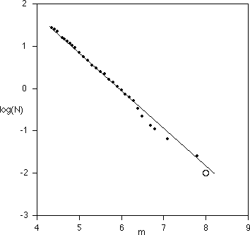

| The Gutenberg-Richter Law is an empirical relation |
| log(N) = -b⋅m + a |
| between the magnitude m and the number N of earthquakes of magnitude
exceeding m. |
| Straightforward calculations
(pgs 178-179 of Turcotte) convert this to a
power law. |
| N = B⋅r-2b |
| where the length of the fault break is
r = √A and A is the area of the
fault break. Then 2b = D, the dimension of seismic
activity for the region from which
the data were collected. |
| For example, the graph below (inspired by page
179 of Turcotte)
illustrates the number N of earthquakes per year of magnitude exceeding m in
southern California for the period 1932-1972. The circle represents the expected
rate of great earthquakes in southern California. The data predict about one per
century. |
|  |